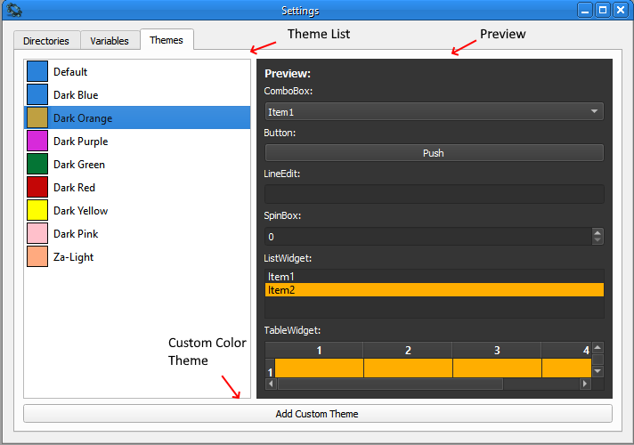

To view the different theme colors; you can single click on any items from the list.

Double clicking an item switches the application theme color.
Note: Themes are saved as soon as user sets the theme; so restarting the application will still have the correct theme from previous session